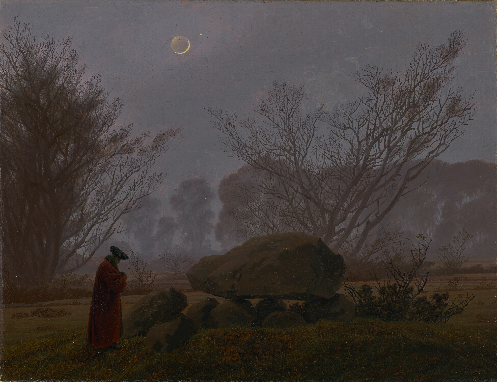

MLitt student in Philosophy
University of St Andrews
mdu42[at]wisc[dot]edu
Hi! I am an MLitt student in philosophy at the University of St Andrews. I am primarily interested in moral, legal, and political philosophy. My current studies focus on distributive justice and general jurisprudence, but I am also interested in neighboring fields like just war theory, effective altruism, and human rights.
Before that, I received my B.A. in Mathematics and Philosophy from the University of Wisconsin-Madison.
